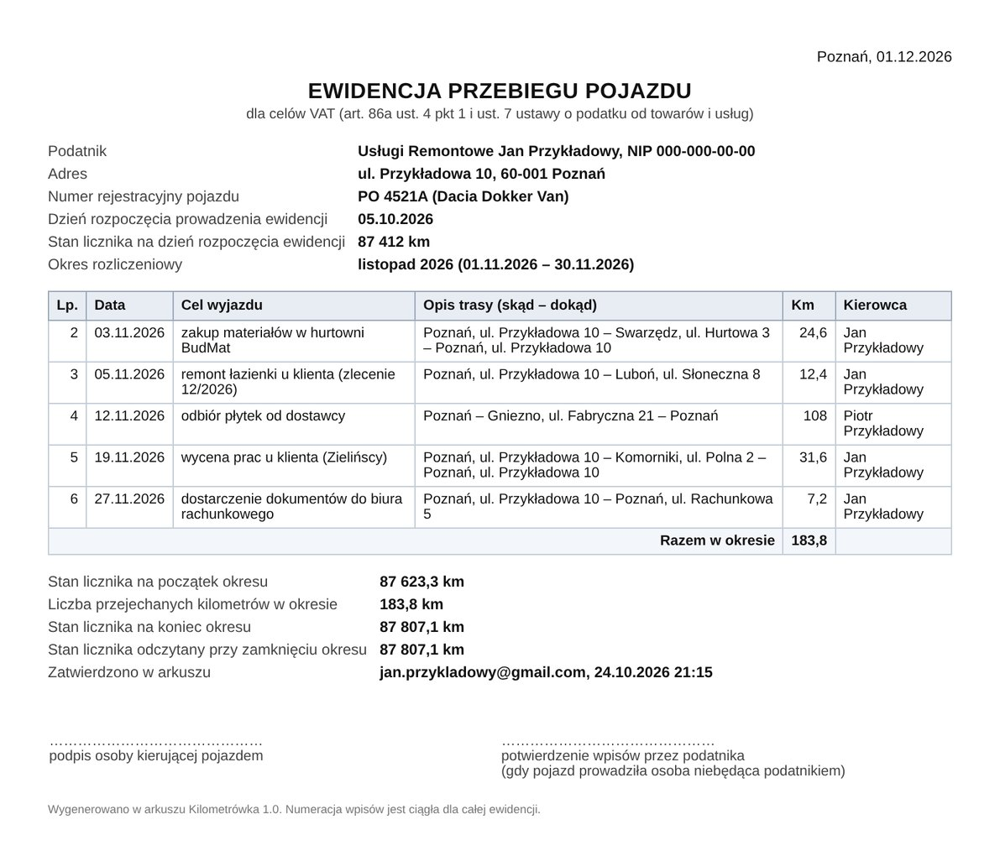

Kilometrówka, która sama liczy licznik i pilnuje wymaganych pól
Wpisujesz przejazd: datę, cel, trasę i kilometry. Arkusz numeruje wpisy, liczy stan licznika, sprawdza, czy niczego nie brakuje, i robi PDF za miesiąc albo kwartał, gotowy dla księgowej.
Wersja darmowa obsługuje 30 przejazdów. Bez instalowania programów i bez zakładania kont.
| Data | Cel wyjazdu | Km | Licznik |
|---|---|---|---|
| 03.11.2026 | materiały z hurtowni | 24,6 | 87 647,9 |
| 05.11.2026 | remont u klienta | 12,4 | 87 660,3 |
| 12.11.2026 | płytki od dostawcy | 108,0 | 87 768,3 |
| 19.11.2026 | wycena prac u klienta | 31,6 | 87 799,9 |
| 27.11.2026 | biuro rachunkowe | 7,2 | 87 807,1 |
Dwa rodzaje kilometrówki w jednym arkuszu
Tryb wybierasz w zakładce Ustawienia. Arkusz dopasowuje wymagane pola, podsumowanie i wygląd PDF.
Samochód firmowy na 100% VAT
Ewidencja według art. 86a ust. 7 ustawy o VAT dla auta używanego wyłącznie w działalności.
- numer rejestracyjny, dzień rozpoczęcia i zakończenia ewidencji
- stan licznika na start, na koniec każdego okresu i na zakończenie
- przy każdym przejeździe: kolejny numer, data, cel, trasa, kilometry i kierowca
- okres miesięczny albo kwartalny, tak jak rozliczasz VAT
Prywatne auto pracownika
Pracownik jeździ swoim autem do celów służbowych, a pracodawca zwraca mu koszty według stawki za 1 km.
- dane pracownika i pojazdu, pojemność silnika
- stawki maksymalne: 0,89 zł do 900 cm³, 1,15 zł powyżej 900 cm³ (albo niższa stawka pracodawcy)
- kwota zwrotu przy każdym przejeździe i za cały miesiąc
- PDF z miejscem na podpis pracownika i pracodawcy
Sprawdzenie, zanim zrobi to urząd
Opcja „Sprawdź ewidencję” przegląda wszystkie wpisy i pokazuje, co poprawić. Urzędy skarbowe kwestionują ewidencje z ogólnikowymi opisami, a wtedy zamiast 100% VAT odliczysz tylko 50%.
Co wyłapuje arkusz
- „K–K” zamiast trasy skąd – dokąd z miejscowościami albo adresami
- „wyjazd służbowy” zamiast konkretnego celu
- brak daty, celu, kilometrów albo kierowcy
- przejazdy przed dniem rozpoczęcia ewidencji albo w złej kolejności
- powtórzone wpisy i podejrzanie długie trasy
- różnicę między odczytem z licznika a ewidencją przy zamykaniu okresu

PDF za okres: dane podatnika i pojazdu, wszystkie przejazdy z numerami, stan licznika na początek i koniec okresu oraz miejsce na podpisy.
Co dostajesz
Jeden arkusz Google z gotowym skryptem. Kopiujesz go na swój Dysk, uzupełniasz ustawienia i wpisujesz przejazdy.
Szybkie dodawanie
Okno „Dodaj przejazd” z listą częstych tras. Opcja „tam i z powrotem” sama podwaja kilometry i dopisuje trasę powrotną.
Licznik liczy się sam
Numer wpisu, stan licznika po każdym przejeździe i kwota zwrotu wyliczają się automatycznie.
PDF dla księgowej
Zamknięcie okresu tworzy PDF, który pobierasz albo wysyłasz jednym kliknięciem do siebie lub do księgowej.
Zatwierdzone okresy
Zamknięty okres zapisuje się z datą i kontem Google, które go zatwierdziło, a jego wpisy są chronione przed przypadkową zmianą.
Przypomnienie
Pierwszego dnia miesiąca mail z podsumowaniem minionego okresu: liczba przejazdów, kilometry i stan licznika.
Dane zostają u Ciebie
Przejazdy są tylko w Twoim arkuszu na Twoim koncie Google. Nikt poza Tobą nie ma do nich dostępu.
Cennik
Ten sam arkusz w obu wersjach. Klucz licencyjny z Gumroad zdejmuje limit przejazdów.
- 30 przejazdów
- Wszystkie funkcje: sprawdzanie, PDF, przypomnienie
- Bez limitu czasu
- Bez limitu przejazdów
- Jedna płatność, bez abonamentu
- Pomoc mailowa przy ustawieniu
Pytania
Czy ewidencję można prowadzić w arkuszu?
Tak, ewidencja przebiegu pojazdu może być prowadzona w formie elektronicznej. Musi zawierać elementy z art. 86a ust. 7 ustawy o VAT. Arkusz ma na nie osobne pola i sprawdza, czy są uzupełnione.
Od kiedy prowadzić ewidencję i co z VAT-26?
Ewidencję prowadzi się od dnia poniesienia pierwszego wydatku na pojazd. W ciągu 7 dni od tego wydatku składa się w urzędzie skarbowym informację VAT-26. Arkusz pokazuje ten termin w zakładce Ustawienia.
Jeżdżę w firmie prywatnym autem. Czy potrzebuję kilometrówki?
Od 2019 r. przedsiębiorca, który używa w firmie prywatnego samochodu, nie prowadzi kilometrówki do PIT, tylko zalicza do kosztów 20% wydatków na auto. Tryb zwrotu za km jest dla pracodawców, którzy zwracają pracownikom koszty jazd ich prywatnymi autami.
Czy muszę coś instalować?
Nie. Potrzebujesz tylko konta Google (zwykłego Gmaila albo Google Workspace). Arkusz kopiujesz jednym kliknięciem na swój Dysk. Menu Kilometrówka działa w przeglądarce na komputerze.
Co to za ostrzeżenie Google przy pierwszym uruchomieniu?
Przy pierwszym użyciu Google pyta o zgodę na działanie skryptu w Twoim arkuszu: dostęp do tego jednego arkusza, okna z formularzem i wysyłanie PDF z Twojego konta. Komunikat o niezweryfikowanej aplikacji pojawia się przy każdym własnym skrypcie. Instrukcja krok po kroku jest w zakładce Start.
Jak przejść z wersji darmowej na pełną?
Kupujesz pełną wersję na Gumroad, dostajesz mailem klucz licencyjny i wklejasz go w menu Kilometrówka, opcja „Aktywuj licencję”. Przejazdy i ustawienia zostają bez zmian.